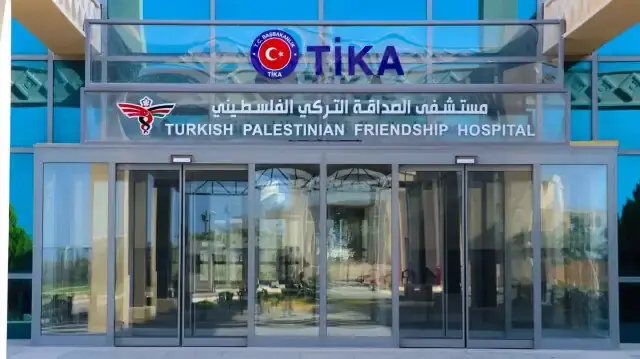
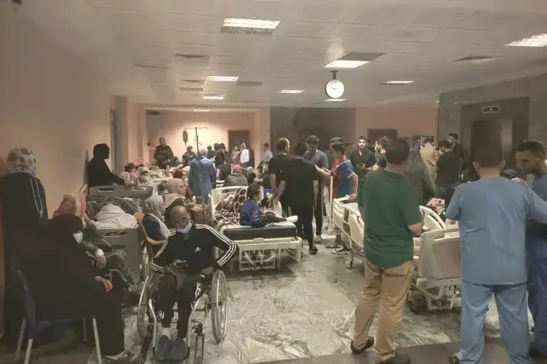
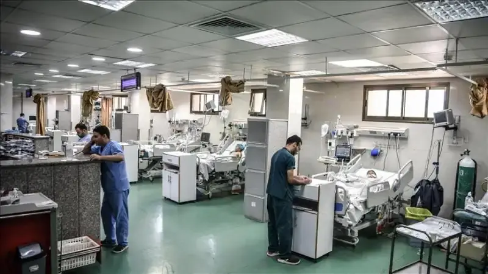
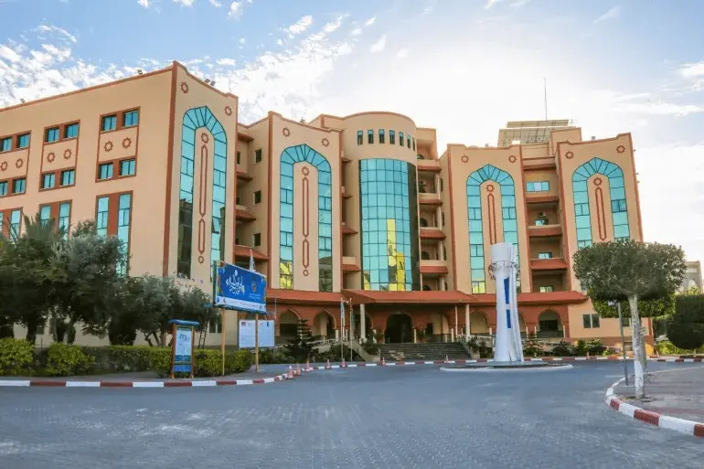

عن المستشفى
مستشفى الصداقة التركي الفلسطيني هو مستشفى جامعي تعليمي يتبع لكلية الطب في الجامعة الإسلامية بغزة. تم إنشاؤه ليكون صرحاً طبياً وتعليمياً رائداً في فلسطين، حيث يقدم خدمات صحية عالية الجودة للمجتمع ويوفر بيئة تدريبية متميزة لطلبة الكليات الصحية.
الرؤية
الريادة في تقديم الخدمات الصحية والتعليم الطبي والبحث العلمي على المستوى الوطني والإقليمي.
الرسالة
تقديم رعاية صحية آمنة ومتميزة، وتوفير بيئة تعليمية وتدريبية مبتكرة للكوادر الصحية، وتشجيع البحث العلمي التطبيقي لخدمة المجتمع الفلسطيني.
دور المستشفى
لعب المستشفى أدواراً حيوية منذ استلام الجامعة لإدارته رسمياً في مارس 2020، ومن أبرزها:
مركز للعزل خلال جائحة كورونا.
مستشفى تخصصي لمرضى السرطان والأورام.
مستشفى تعليمي لتدريب طلبة كلية الطب.
يحتوي قاعة لعقد المؤتمرات العلمية.
الأقسام والخدمات الرئيسية
قسم الجراحة العامة
قسم الباطنة
قسم الأطفال
قسم النساء والتوليد
قسم الطوارئ
قسم العناية المركزة
قسم الأشعة التشخيصية
المختبرات وبنك الدم
قسم الصيدلة
ألبوم الصور



